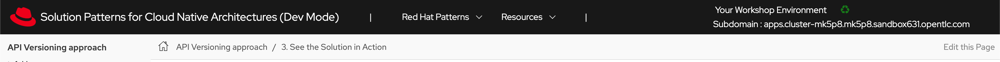
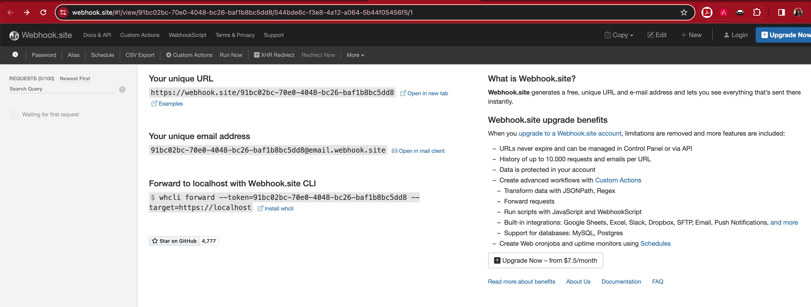
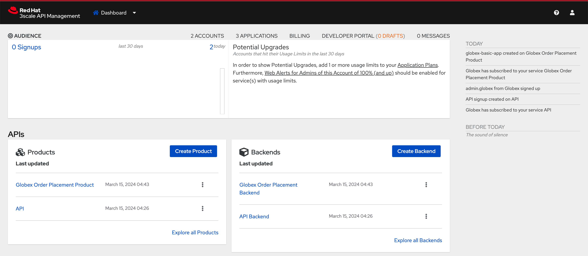
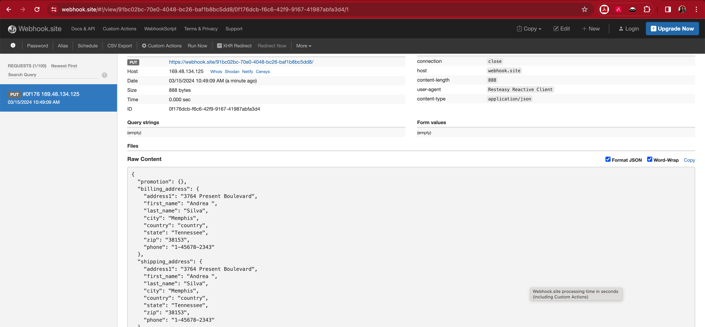
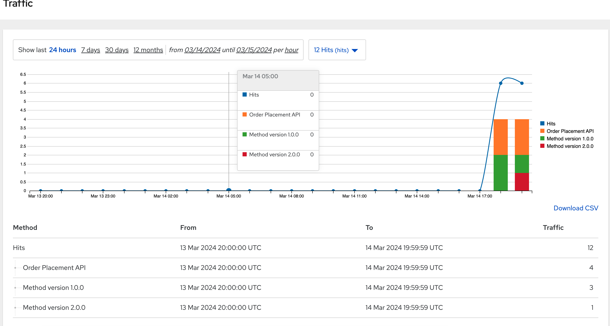

Solution Pattern: API Versioning
See the Solution in Action
1. Setup the solution
To provision the demo you will perform the following steps - each of which are explained in detail in the next sections:
-
Gain access to Red Hat OpenShift. This solution pattern has been tested on OpenShift 4.15
-
Ensure you have the tools
ocandansibleinstalled in your local environment such as your laptop -
Access the OpenShift cluster with cluster-admin privileges
-
Log in to OpenShift with
cluster-adminrole via cli -
Run the Ansible playbook
-
Run a bunch of scripts to deploy the Solution Pattern in your OpenShift cluster
1.1. Pre-requisites
Here is the list of tools you need in your local environment so that you can use the automated installation.
To check if you have the cli tools, you can open your terminal and use following commands:
If you can’t see kubernetes.core collection listed, you can install it with ansible-galaxy:
1.2. Installing the demo
-
Login to your OpenShift cluster as cluster-admin (because a number of operators will need to be installed)
-
Click on the username on the top right hand, and then click on Copy login command. This will open another tab and you will need to login again
-
Click on Display token link, and copy the command under Log in with this token. This will look like this
-
Clone the ansible scripts as follows in an appropriate folder in your local environment
Run the following command to setup the fundamental config needed. Ensure that the ansible playbook is deployed without errors
-
This is the output you get from the above ansible command:
PLAY RECAP **************************************************************************************** localhost : ok=86 changed=17 unreachable=0 failed=0 skipped=31 rescued=0 ignored=0
That’s it! You are set to try out this Solution Pattern! ｡◕‿◕｡
1.3. Personalize the instructions
To personalize the rest of the instructions to your OpenShift environment,
-
At the top-right of this page enter
-
subdomain to match your OpenShift cluster under the Your Workshop Environment section
-
-
Press enter or click on the Set button
-
The menubar and the rest of this walkthrough guide will be updated with the username and subdomain as shown below

|
The subdomain would look something like this |
2. Workshop Walkthrough guide
Here is an overview of what you will achieve
|
The Design, Govern and Mock phases of API lifecycle have been discussed in other solutions patterns; so in this pattern we will skip straight to the implementing API versioning. So, this solution pattern focuses on how 3scale API management and OpenShift can help with API versioning. |
3. Step 1: Overview
Let’s walk through an overview of the components that have been setup already
-
Launch the OpenShift console and login
-
Navigate to Topology from the Developer’s view of the
globex-user1project-
The center section under the name globex-app-user1 contains the components needed for the first version of the application and the api.
-
globex-uiis the retail website -
order-placementis the microservice which implements the OrderPlacement API. This service validates incoming payload against JSON Schema of the OpenAPI spec. -
catalogandinventorycomponents provide the services needed for the retail websites.
-
-
The left section v1-1 is the (future looking) setup for v1-1.
-
This is at zero pods at the moment because the corresponding API version is not setup yet
-
-
The right v2-0 is the (future looking) setup for v2-0.
-
This is at zero pods at the moment because the corresponding API version is not setup yet
-
-
4. Step 2: Enable Version 1.0.0
4.1. API specification and governance
The version 1.0.0 of this Globex Order Placement API has already been created for you. This can be viewed in github here. You can note how the version is represented in the following snippet
openapi: 3.0.2
info:
title: OrderPlacementAPI V1.0
version: 1.0.0
description: 'API Call to place an order with product, address and user details'4.2. As a backend developer
Setup OrderPlacement backend service
The backend of OrderPlacement API for the purpose of this demo, acts as a facade to receive the payload, and then posts the Order payload to a https://webhook.site/.
|
In real life, there are a number ways this payload can be handled
|
As seen earlier, the OrderPlacement backend service has already been provisioned for you. You will now update the enviornment variables.
-
The ORDER_PLACEMENT_API env variable of the OrderPlacement backend service has a placeholder which needs to be replaced.
-
Launch https://webhook.site/, and copy the the URL displayed as Your unique URL by clicking on it
 -
From your command prompt, set an environment variable
-
Run the following command to update the backend service’s environment variables.
-
You will see the output
deployment.apps/order-placement updated -
This is how the env variables of the Order Placement service will look like after update.

-
-
Any payload being POSTed to this service will now be sent to this webhook site for inspection.
Instead of a plain JSON order payload, you can consider the payload to be a CloudEvents. CloudEvents can then hold versions in their headers which makes it easier to route to different downstream systems through (for e.g.) using Knative Eventing
4.3. As an API Provider
Setup 3scale entities
Just like the code, all the 3scale Custom Resources are also maintained in git and are managed through ArgoCD/GitOps. This helps to version the 3scale entities as well.
-
Run this command from where you have cloned the ansible playbook in the first step.
-
This command will use the git branch
1.0.0as the source of truth since we start with version1.0.0 -
This command will create version 1.0.0 of 3scale Backend, Product, Application Plans, Developer Account and the Application for the account as well
-
-
The above command setup up an ArgoCD application which is responsible for the 3scale custom resources
Click to learn how to access ArgoCD
-
From the OpenShift console, click on the Clutser Argo CD menu
-
You will next need to get the ArgoCD admin credentials.
-
Access this from
openshift-gitops-clustersecret in the openshift-gitops namespace. Launch openshift-gitops-cluster here -
Copy the admin.password from the bottom of this page
-
Login to ArgoCD with username: admin and password: from openshift-gitops-cluster secret
-
You will note that there are a number of Argo applications
-
The apim-user1 contains all of the 3scale custom resources. Go ahead and explore this - you will see Product, Backend, Developer Account amongst other things.
-
-
Click on 3scale to view all the entities that have been created for you. Login using (user1/openshift)

-
Note that the Globex Order Placement Product and Globex Order Placement Backend are now created.
-
ActiveDoc can be viewed under Globex Order Placement Product → ActiveDocs
-
ActiveDoc is created with OpenApi Specs. For the purpose of this solution pattern we are using a prebuilt OpenAPI.
-
Apicurio API designer is a great tool to build API designs. You can then manage it with Apicurio Service Registry
-
-
Click on Globex Order Placement Product navigate to Product→ Integration → Methods and Metrics to view what’s been setup.
Methods and Metrics help map different backend services to different paths representing URL versions, and also help to track metrics based on hits for different backend service versions
-
Now click on Mapping Rules link. The Mapping rules help to route a request to the right version of backend service (e.g. /v1/placeorder)
E.g. `api.globex.com/v1/OrderPlacement` will go to `v1` backend service-
The Mapping Rule with the pattern
/{version}also helps to track all the metrics to Globex Order Placement API in total.-
Order Placement APItracks all hits made to the API irrespective of which version
-
-
The Mapping Rule with the pattern
/v1also helps to track all the metrics to Globex Order Placement API in total.-
Method version 1.0.0tracks hits made to the 1.1.0 API version which accessed by path /v1 only
-
-
-
Before you can start accessing the Globex Order Placement API, you must promote the APIcast configuration as below.
Click to view what is APICast
APIcast is an NGINX based API gateway used to integrate your internal and external API services with the Red Hat 3scale Platform. In this workshop we use the two built-in APICast (staging and production) that come by default with the 3scale installation. They come pre-configured and ready to use out-of-the-box.
-
From the left hand menu, navigate to Integration → Backend to view the Globex Order Placement Backend.
Note The Public path to access this version is /v1 -
From the 3scale homepage, under the Products section, click on Globex Order Placement to view the Product’s overview page. From the left hand menu, navigate to Integration → Configuration
-
Note that Globex Order Placement Backend shows that the backend is mapped as "v1". The API will then be accessed via v1 path. This helps in versioning this OrderPlacement API as 1.0.0
-
4.4. As an API Consumer
Globex UI patched with API Credentials and APICast URL
Next step, patch the globex-ui deployment with the API credentials and the APIcast URL. Typically developers get APICredentials from the Developer Portal.
-
In 3scale, navigate to Audience (from top nav) → Developer Portal → Visit Portal
-
Sign in using (dev.globex/openshift)
-
Click on API credentials link on top nav, and you will see Globex Basic Application
-
Copy the alphanumeric value found as User Key and create environment variable
API_USER_KEY_VALUE
-
Run the following command to update the backend service’s env variables.
-
You should see an output message
deployment.apps/globex-ui updated
-
4.5. Testing this out
-
Launch the retail website
-
Login using any valid email address and any 6-digit password - since this is just a simulation.
-
Navigate to the Cool Stuff Store from the top menu. Add a few things to the cart.
-
Click on Cart from the top menu and Proceed to Checkout.
-
Click on the Autofill form button to make it easy to fill this form.

-
Click on Submit Order
-
You must see a success message
-
You can view the payload on the webhook.site that you setup

4.6. View Traffic Analytics
-
Try placing a few orders to generate traffic.
-
Navigate to 3scale Dashboard, and click on globex-order-placement to view the Product Details
-
Click on the Analytics → Traffic link on the left hand side menu. You will see the Hits details.
-
This section provides insights in terms of the number of hits for the product and other traffic analysis details as well.
5. Step 3: Enable Version 1.1.0
Globex now wants to capture a new field called Delivery Instructions to make it easier to make prompt deliveries This is considered as a non-breaking change because this is an optional field. To handle the new field, let’s introduce version 1.1.0 of OrderPlacement API.
This change has varying degrees of impact across the different stakeholders (provider, developer & consumer)
Click to view a summary
-
As an API provider
-
Use APICurio studio to make changes to OpenAPI Specification to include Optional field Delivery Instructions and change version from 1.0.0 to 1.1.0
-
Publish this on Apicurio Service Registry
-
Update 3scale for new Backend (version 1.1.0), update Product to point to the Backend version 1.1.0, update ActivdDoc
-
Point to new Backend service which adheres to the new API specification
As mentioned earlier the APICurio studio and Apicurio Service Registry changes are not included to keep this solution pattern accessible and not overtly too lengthy.
-
-
As a Backend service developer
-
Create a new branch with name v1.1.0 and change the Order Placement service to allow for Delivery Instructions
-
Update any POJOs or mapping - ideally it is better to handle this as a JSON payload rather than mapping to a POJO so as to allow for minimal impact
-
Update validations against new OpenAPI spec. In our case we use JSON Schema based validation.
-
-
As an API consumer
-
May choose to consume the new API at their own pace.
-
Changes includ update to the UI to allow for the new field Delivery Instructions.
-
Change any validations if necessary. Ensure adherence to new OpenAPI specification
-
5.1. As a backend developer
Deploy new version 1.1.0 of the backend service
-
The backend service deployment for version 1.1.0 has been already deployed as part of the setup to keep things simpler for the demo, but is set as replica 0 (i.e, it is at zero pods)
-
The OpenAPI specification has been updated with optional Delivery Instructions. You can view the version 1.1.0 here
openapi: 3.0.2 info: title: OrderPlacementAPI V1.1 version: 1.1.0 description: 'API Call to place an order with product, address and user details' ...... delivery_instructions: description: Send optional delivery instructions ...... -
The OpenAPI specification for this version 1.1.0 has been converted ionto JSON Schema and is part of this backend service. Click here to view the version 1.1.0 JSON Schema. Note the introduction of delivery_instructions field which is optional
-
Patch the
order-placement-v1-1-0deployment with the webhook.site URL that you have setup earlier.-
From your command prompt
echo $WEBHOOKSITEto make sure you have the env variable accessible -
Run the following command to update the backend service’s environment variables, and scale the replica to
1-
Output would be like this
deployment.apps/order-placement-v1-1-0 updated deployment.apps/order-placement-v1-1-0 scaled
-
-
5.2. As an API Provider
Configure 3scale entities for version 1.1.0
-
Run this command from the command prompt from where you have cloned the ansible playbook.
-
This command will use the git branch
1.1.0as the source of truth since we are now rolling out version1.1.0 -
This command will create version 1.1.0 of 3scale Backend, Product, Application Plans, Developer Account and the Application for the account as well
-
The output will be like this
PLAY RECAP ****************************************************************************************************************** localhost : ok=12 changed=1 unreachable=0 failed=0 skipped=3 rescued=0 ignored=0
-
-
You can access ArgoCD as described earlier to view the new entities for v1.1.0 being deployment (including new Backend, updates to the Product)
-
From 3scale promote APICast configuration from Globex Order Placement Product → Integration → Configuration → *Promote to v.x Staging APICast and Promote to v.x Production APICast
5.3. As an API Consumer
Update UI to updated version 1.1.0
|
This is a backward compatible change. Therefore, the existing globex-ui 1.0.0 deployment will work as it is without any changes with the new Backend 1.1.0 version. You can test this out just to be sure :) |
When the UI developers are ready, they can make the following changes to start consuming the new changes, and send the new Delivery Instructions as part of the order payload.
-
Run this command to update the image of globex-ui deployment to the 1.1.0 version
5.4. Testing this out
-
Launch the retail website preferably in incognito - or perform a hard refresh of the browser to nullify caching.
-
Login using any valid email address and any 6-digit password.
-
Navigate to the Cool Stuff Store from the top menu. Add a few things to the card and proceed to checkout
-
Notice that there is a new field called Delivery Instructions. Provide some content for this new field, and click on Submit Order

-
You should see a confirmation message that the order has been placed.
-
Navigate to the webhook.site you have setup to check that the delivery_instructions is being passed on correctly

6. Step 4: Enable Version 2.0.0
Further down the line, Globex would like to merge First name and Last name into a single field to better represent different cultures and conventions.
This is considered as a breaking change since there is no backward compatibility leading to a major version change to OpenAPI spec version 2.0.0
The version 2.0.0 of this Globex Order Placement API has already been created for you. This can be viewed in github here.
The same set of impacts identified across the different stakeholders while introducing version 1.1.0 also applies for a Major version change. The main impact is that, this version is NOT backward compatible.
6.1. As a backend developer
New version 2.0.0 of the backend service
-
The backend service deployment for version 2.0.0 is in place to keep this pattern simple, but is set as replica 0 (i.e, it is at zero pods)
-
The OpenAPI specification for this version 2.0.0 has been converted into JSON Schema and is part of this backend service. Click here to view the version 2.0.0 JSON Schema. Note the introduction of name field which is not optional, and has replaced first name and last name fields.

-
-
You will need to patch this deployment as well with the webhook.site URL that you have setup earlier.
-
From your command prompt
echo $WEBHOOKSITEto make sure you have the env variable accessible -
Run the following command to update the
order-placement-v2-0service’s environment variables, and scale the replica to1-
Output would be like this
deployment.apps/order-placement-v2-0 updated deployment.apps/order-placement-v2-0 scaled
-
-
6.2. As an API Provider
Setup 3scale entities for version 2.0.0
-
Run this command from the command prompt from where you have cloned the ansible playbook.
-
This command will use the git branch
2.0.0as the source of truth since we are now rolling out version2.0.0 -
This command will create version 2.0.0 of 3scale Backend, Product, Application Plans, Developer Account and the Application for the account as well
-
The output will be like this
PLAY RECAP ****************************************************************************************************************** localhost : ok=12 changed=1 unreachable=0 failed=0 skipped=3 rescued=0 ignored=0
-
-
From 3scale promote APICast configuration from Globex Order Placement Product → Integration → Configuration → *Promote to v.x Staging APICast and Promote to v.x Production APICast
-
Note from Globex Order Placement Product→ Integration → Backend that new Backend has been added mapped to
/v2path. -
Navigate to Globex Order Placement Product→ Integration → Methods and Metrics and note that a new method for
v2has been added
-
Navigate to the Mapping Rules menu and note that a new rule for
/v2has been added which will direct all api calls with/v2to the new version 2.0.0 backend -
Promote APICast configuration
6.3. As an API Consumer
Update UI to version 2.0.0
-
Run this command to update the image of globex-ui deployment to the 2.0.0 version and update the env variables
-
You will see the output
deployment.apps/globex-ui image updated
-
6.4. Testing this out
-
Launch the retail website preferably in incognito - or perform a hard refresh of the browser to nullify caching.
-
Login using any valid email address and any 6-digit password.
-
Navigate to the Cool Stuff Store from the top menu. Add a few things to the card and proceed to checkout
-
Notice that there is a new field called Delivery Instructions. Provide some content for this new field, and click on Submit Order
-
You should see a confirmation message that the order has been placed.
-
Navigate to the webhook.site you have setup to check that the delivery_instructions is being passed on correctly

-
6.5. View Traffic Analytics
-
Try placing a few orders to generate traffic. You can also place dummy orders as discussed earlier.
-
Navigate to 3scale Dashboard, and click on Globex Order Placement Product to view the Product Details
-
Click on the Analytics → Traffic link on the left hand side menu. You will see the Hits details split between the versions v1 and v2.

7. Step 5: Manage and Analyse: Analytics, consumer notification
Especially with the introduction of a breaking change, you will like to sunset your older version of the API at the earliest. You will need to start by notifying the consumers.
-
Navigate to Audience (from top menu) → Accounts → Listing.
-
You will see the number of applications the Globex user has signed for. (in this case it is 2). You can search for the Accounts which have signed up for the Order Placement API by using the search term Globex Basic
-
You can also drill down to an account by clicking on the hyperlink [2]
-
From the Applications for Globex Page click the "x Applications" link on top

-
You can now choose the relevant accounts to view the Bulk operations available.

-
Click on Send email to send a notification saying something like this.
Subject: Basic Plan of Globex Order Placement version 1.1.0 deprecation Body of Email: Hello Please note that Globex Order Placement version 1.1.0 is being deprecated and will not be available for new signups. The version 1.1.0 will be removed by <date>. Please refer to the Developer Portal for details of version 2.0.0
7.1. Make the 1.1.0 version unavailable for signups
Once you are ready to sunset the older version here is what you can do:
-
Navigate to Products → Globex Order Placement → Applications → Application Plans
-
Click on the green checkboxes for Enabled and Visible columns for the
Method version 1.0.0to make it red as shown below. -
All calls to /v1/ will now fail authentication.
8. Alternatives to introducing new versions
In this pattern we continued to use the same Application Plan for all revisions. In the real world, there are options that can be considered based on the context of how the teams function, and what is relevant for business.
8.1. New 3scale Product
For breaking changes, you may consider creating a new 3scale Product for version 2.0.0. Once you are ready to sunset the version 1.x.x, just delete the product.
8.2. New application plan
You may also consider creating a new application plan for the new version. Here is how this would pan out
-
In the Existing application plan, turn off access to version 2.0.0 Backend
-
Create a new application plan for version 2.0.0
-
Unpublish the older application plan by changing the State to hidden.
8.3. Advantages of this option:
-
This means that all new users will only be able to sign up to the newer plan; when version 1.x.x is being sunset, you can just delete all those applications and the plan itself
-
Another advantage of creating a new application plan is that when you unpublish it on the developer portal, you won’t have any net new signups for the old version. But you can also provide an ELS option for some existing customers(if needed) without the risk of new people signing up to the API.
9. Conclusion
Congratulations on completing this Solution Pattern. As a takeaway
-
APIs are very useful as building blocks for internal and external system integrations
-
Don’t change frequently - but have a public strategy in place to have predictable releases and consumer notification
-
Consider including Release Notes in your developer portal with access to OpenAPI Specs, trials and code samples
-
GitOps and ArgoCD are you friends to make this manageable and trackable
To sum up, build Intentional APIs. Be deliverate while creating APIs for internal or external stake holders. Being intentional across the API lifecycle from designing, developing, versioning and managing it, makes for easier adoption and higher adoption.
Explore more Solution Patterns here